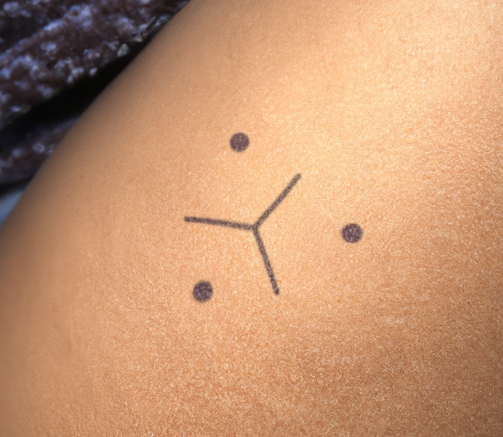

AI label
En un mundo inundado de artefactos producidos por IA, puede que llegue a ser necesario etiquetar las obras para precisar el origen del contenido consultado. De hecho, por razones de transparencia y ética, saber cómo y en qué medida se ha utilizado la IA, permite evitar cualquier confusión o malenteniddo sobre la autoría de un proyecto. Esta herramienta de señalización permite recuperar cierto control sobre las obras etiquetadas, ya sea para promover o criticar la utilización de la IA.
Las etiquetas se han diseñado con este fin, con tres símbolos bajo licencia CC 0, es decir, de dominio público, que puedes descargar y utilizar como desees.

La primera etiqueta, SIN USO DE IA, representa tres círculos dispuestos en los vértices de un triángulo invisible. Tres segmentos parten de los lados y se unen en el centro del triángulo formando la letra Y. El símbolo puede interpretarse gráficamente como tres siluetas de personas (el círculo representa la cabeza y la Y el cuerpo) o tres personas vistas desde arriba y trabajando en colaboración alrededor de una mesa o en un taller.

La segunda etiqueta, CON ASISTENCIA DE IA, representa los tres círculos del logotipo anterior. En lugar de la Y, los dos círculos inferiores del triángulo están unidos, formando una base. Este vínculo representa el cimiento, la ayuda en la que el ser humano se apoyará para crear su proyecto. El círculo situado encima de esta base representa la obra en construcción.

La etiqueta final, CREADO CON IA, vuelve a utilizar la disposición triangular de círculos. En esta ocasión, dos segmentos conectan los lados del triángulo, creando la forma de la letra A de «Artificial». Aquí, el símbolo triangular cobra mayor protagonismo, evocando una señal de advertencia y enfatizando que la obra ha sido generada por IA.

Este sistema de clasificación debe ponerse a prueba en su uso y puede contener sesgos que deben señalarse para garantizar la eficacia del mismo. Su uso debe ir acompañado de una mirada lo más objetiva posible, tratando de no encerrarse en prejuicios.
